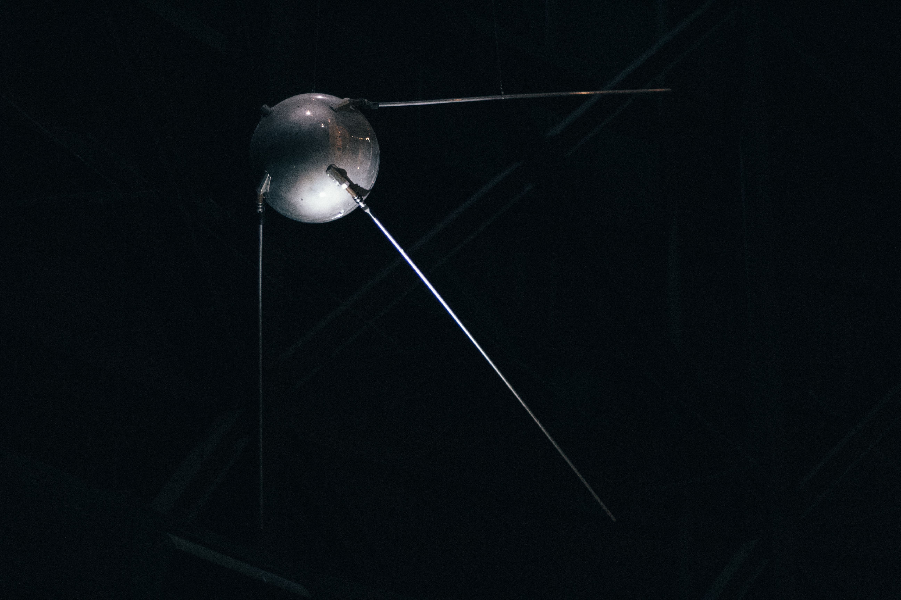
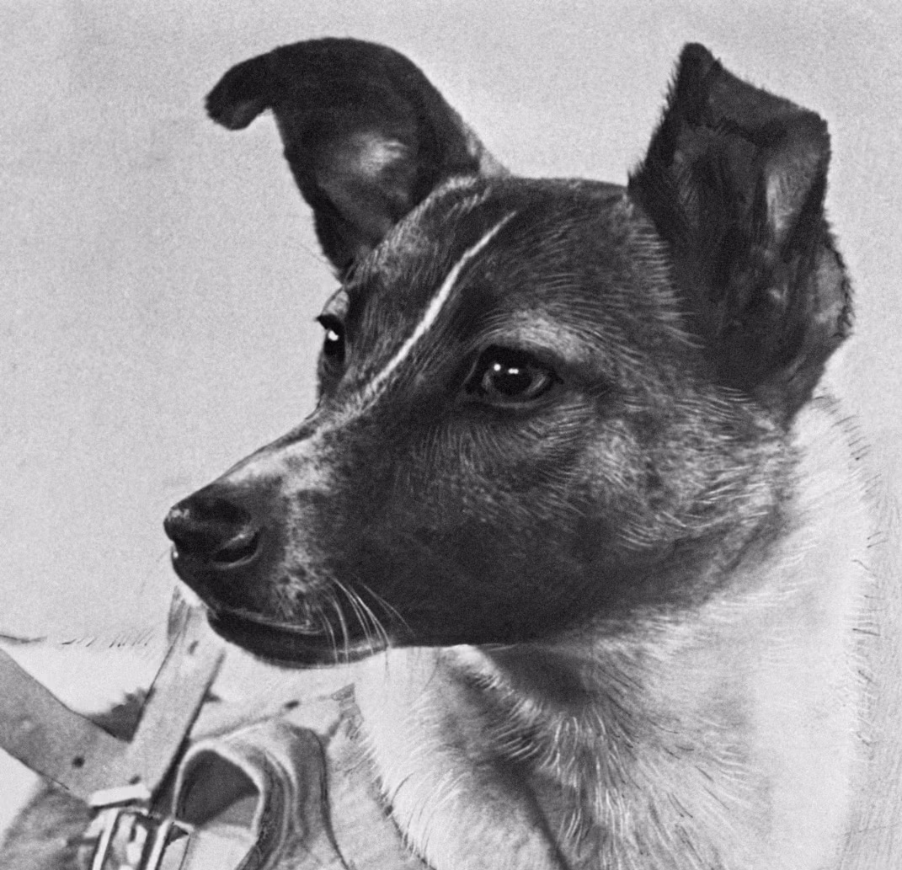

The early days of space exploration were a time of incredible innovation and daring ventures. Fueled by the Cold War competition between the United States and the Soviet Union, both superpowers raced to achieve historic firsts in space. Here are some of the most notable early space missions and projects:
The launch of Sputnik 1 by the Soviet Union on October 4, 1957, marked the beginning of the Space Age. This small, beeping satellite took only 98 minutes to orbit Earth, sending shockwaves through the world and sparking the space race. (2)
Just a month after Sputnik 1, the Soviets launched Sputnik 2, carrying the first living creature into space: a dog named Laika. Although Laika perished during the mission, her sacrifice paved the way for future human spaceflight. (3)
The United States entered the space race with the launch of Explorer 1 on January 31, 1958. This satellite discovered the Van Allen radiation belts, which surround Earth and pose a significant danger to spacecraft and astronauts. (4)